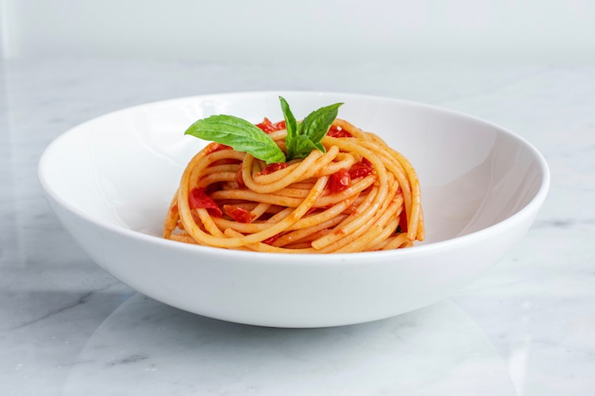

Spaghetti

This is a delicious but a simple dish. What makes this plate the perfect meal is how accessable it is.
This meal can be prepared by a supervised child, a teenager, or a lazy adult. This plate has no limits.
You boild the pasta, you warm up the marinera sauce from the jar (or make your homemade version).
Mix the ingrediants together, and you are done.
ingrediants
- 36oz Marinera Sauce
- 1 lb Ground Beef
- 1/2 Teaspoon dried oregano
- 1 Cup Dry Red Wine
- 4 Cloves Garlic Minced
- 12 ounces Spaghetti
directions
- Heat the oil in a large pot over medium-high heat (we use a Dutch oven). Add the meat and cook until browned, about 8 minutes. As the meat cooks, use a wooden spoon to break it up into smaller crumbles.
- Add the onions and cook, stirring every once and a while, until softened, about 5 minutes.
- Stir in the garlic, tomato paste, oregano, and red pepper flakes and cook, stirring continuously for about 1 minute.
- Pour in the wine and use a wooden spoon to scrape up any bits of meat or onion stuck to the bottom of the pot. Stir in the tomatoes, 3/4 teaspoon of salt, and a generous pinch of black pepper. Bring the sauce to a low simmer. Cook, uncovered, at a low simmer for 25 minutes. As it cooks, stir and taste the sauce a few times so you can adjust the seasoning accordingly.
- bring a large pot of salted water to the boil, and then cook pasta according to package directions, but check for doneness a minute or two before the suggested cooking time.
Back to Homepage